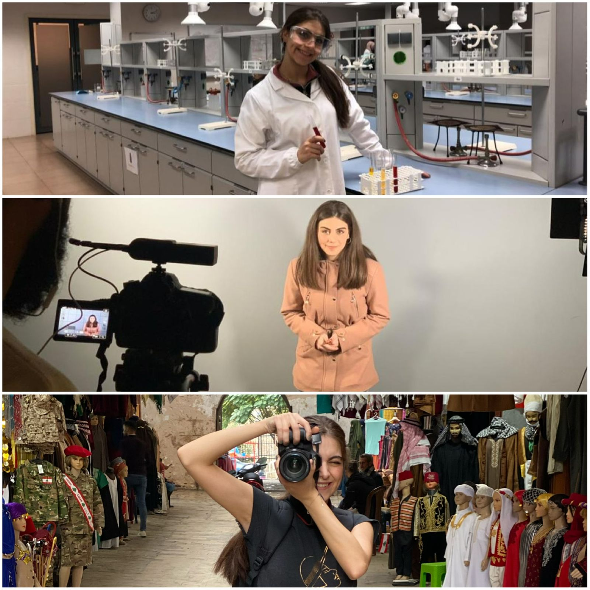

Before, Me, After
This is me Balsam Wehbeh- Senior student majoring in Media and Communication at the American university of Beirut. Since I was in school, I never knew what profession I would pursue in the future, as I was only supposed to follow the academic structure and system without taking into consideration to exploring new things and to having a creative mind.
In grade 5, my mathematics teacher rewarded me and called me "Math Star". Since that time, math has become my favorite subject, and when I became in high school, my passion for math expanded to physics as well.
Grade 12- it was the time to decide what to study for my future career, I wanted to study Electrical and Electronics Engineering because of my math and physics passion, however, no one supported me; they were like "Balsam you're going to be mother, choose a feminine, girly and soft profession where you'll be able to give your home, husband, and children enough time to take care of them." Others were like "Engineering Balsam? you're palestinian in Lebanon, how do you expect from the companies to hire you" and many more others were like "It's for men Balsam, don't do something that you'll regret for the rest of your life."
Since I used to dance Zumba and HipHop, my parents were convincing me to have my own business- to open my own nutrition clinic and gym, so I take advantage of what I know. So, I left my dream major and ended up studying nutrition to live in the pinky and soft world. But I couldn't stand this for so long and I quit university for one semester.
Me
After I quit university, I received an offer where I discovered myself in. I collaborated with non-profit organization in one of their projects, luckily, they chose me to be the video presenter, it was an exceptional experience, especially among these artificial lights and the huge camera in front of me. I liked the vibes of the production team and because of that experience I decided to go for Media and Communication
Not Only Me!
I know that it's not only me in this world that faced discrimination towards her dreams. It's not only me that was judged because of her gender. It's not only me that was forced to do something she doesn't want to please her society and norms. It's not only me that had to face her society to push back the boundaries no matter what the losses are. It's not only me who can face the world and chase her dreams. It's not only me, it's me and you!